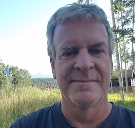

A conference in honor of
Tom Marley
University of Nebraska–Lincoln · June 6–7, 2027

Photo: Nebraska Commutative Algebra RTG.
This two-day conference will bring together colleagues, collaborators, and former students to celebrate Tom Marley and his contributions to mathematics and the community at the University of Nebraska–Lincoln.
The program will feature eight invited speakers, with time for questions, informal discussion, and reconnecting with friends. Additional registration and program details will be posted as they are confirmed.
Invited speakers
- Ian Aberbach (University of Missouri)
- Anna Brosowsky (University of Nebraska–Lincoln)
- Lars Winther Christensen (Texas Tech University)
- Craig Huneke (University of Virginia)
- Sri Iyengar (University of Utah)
- Dan Katz (University of Kansas)
- Zach Nason (University of Nebraska)
- Janet Vassilev (University of New Mexico)
Schedule
The conference will take place over two full days, June 6 and 7, 2027. Talk titles, abstracts, and exact times will be announced.
| Day | Planned activities |
|---|---|
| June 6 | Morning and afternoon talks; conference dinner |
| June 7 | Morning and afternoon talks; closing remarks |
Local information
The conference will be held at the University of Nebraska–Lincoln in Lincoln, Nebraska. The exact room, hotel recommendations, parking information, and registration details will be added here.